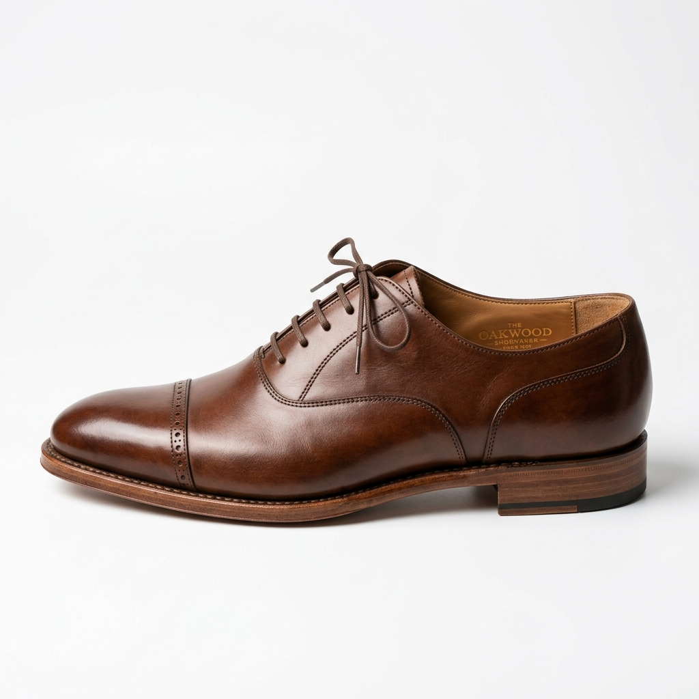

自 1926 年起，我們堅持手工溫度與對細節的極致追求，將每一雙鞋打造成行走的藝術。
SoleStyle 創立於上世紀的經典年代。品牌創辦人 Giovanni Chen 遠赴義大利佛羅倫斯學習最傳統的皮革縫製技術，並與當地的製鞋大師並肩工作數年。
回國後，他結合東方人寬足弓的腳型特徵，改良了西方楦頭，設計出兼顧優雅身段與實穿耐走的完美楦型。這項創新的「東方舒適楦頭」隨即成為我們的金字招牌。
直到今日，即使科技日新月異，我們的核心工序仍堅持在工匠的手中完成，確保每一雙鞋都能完美承載身體的重量。

我們僅採用獲得 LWG 環境認證的歐洲進口頭層皮料，確保質地天然、色澤溫潤且透氣性佳。
每一針一線，都凝聚了資深工匠的專注力。手縫走線能提供機器無法企及的彈性與耐用度。
與足部健康專家共同研發三點式防震科技，有效吸收地面衝擊力，保護足弓與膝關節健康。